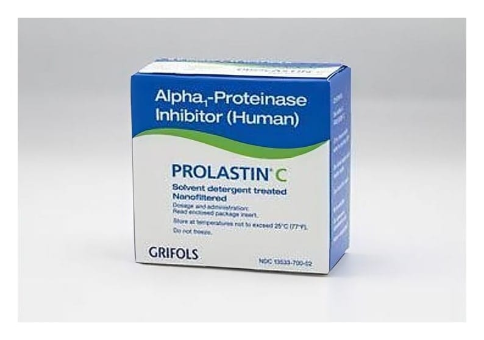

Prolastin C 1000 mg IV İnfüzyon İçin Liyofilize Toz İçeren Flakon, 1 Adet

Ne için kullanılır
KT · Bölüm 12. PROLASTIN-C'yi kullanmadan önce dikkat edilmesi gerekenler 3. PROLASTIN-C nasıl kullanılır? 4. Olası yan etkiler nelerdir? 5. PROLASTIN-C'nin saklanması
Başlıkları yer almaktadır.
1.PROLASTIN-C nedir ve ne için kullanılır?
-PROLASTİN-C, alfa
-antitripsin olarak bilinen steril, kararlı (stabil), yüksek vakumda dondurularak kurutulmuş (liyofilize) insan alfa
-proteinaz inhibitörü (alfa
-PI) preparatından oluşmaktadır.
-PROLASTİN-C; 1000 mg Alfa
- Proteinaz İnhibitörü ( İnsan) içeren tek kullanımlık flakon, sulandırmak için steril enjeksiyonluk su içeren 20 mL’lik ayrı bir flakon, 1 adet transfer iğnesi ve 1 adet filtre iğnesi içermektedir.
-PROLASTIN-C, yetişkinlerde klinik olarak ortaya çıkan, alfa
-proteinaz inhibitörünün (akciğerlerde elastin isimli bağ dokusu proteinini parçalayan bir enzim türünü engelleyerek işlev görür) ciddi düzeyde eksikliği sebebiyle oluşan amfizemin (solunum yetmezliğine yol
açabilen yaygın bir kronik akciğer rahatsızlığı) kronik takviye ve idame tedavisinde kullanılan bir alfa
-proteinaz inhibitörü içeren bir üründür.
Konjenital alfa
-proteinaz inhibitörünün ciddi eksikliği olan hastalarda kullanılmakla birlikte anfizem gelişimini engelleme açısından uzun dönemli etkisi gösterilememiştir.